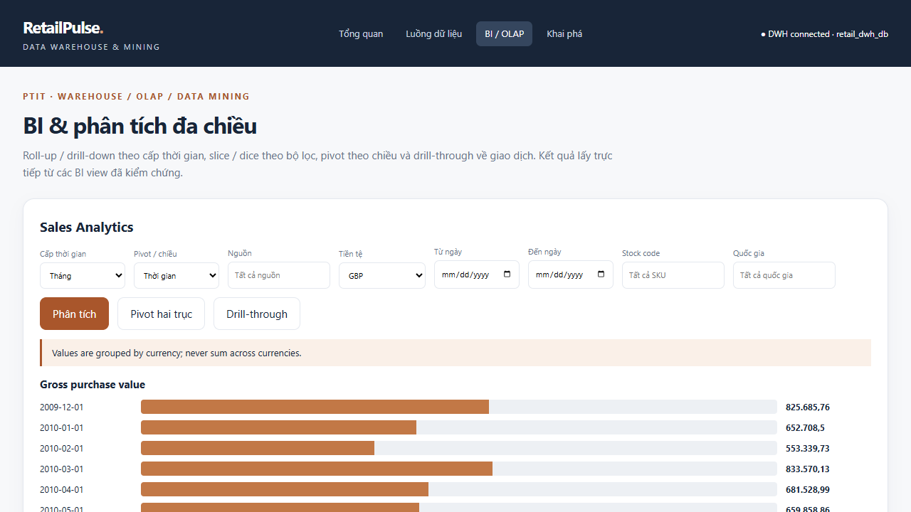
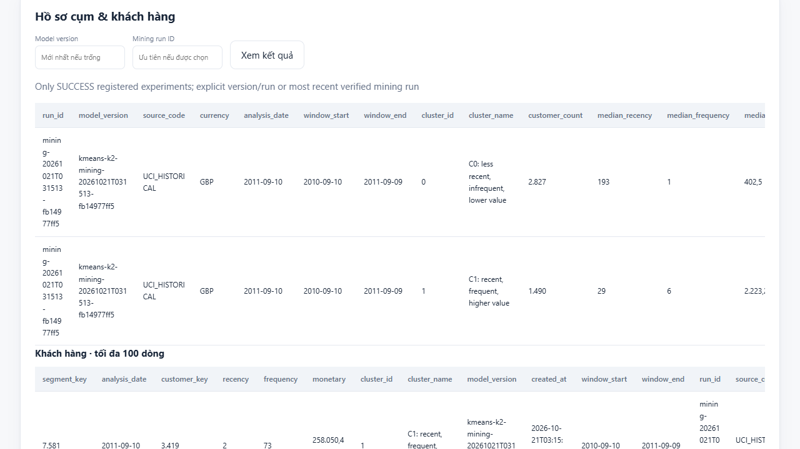

Kho dữ liệu và Khai phá dữ liệu bán lẻ
Tích hợp dữ liệu đa nguồn và phân khúc khách hàng có kiểm chứng
Đồ án học phần PTIT
21 tháng 10 năm 2026
Kho dữ liệu và Khai phá dữ liệu bán lẻ
Tích hợp dữ liệu đa nguồn và phân khúc khách hàng có kiểm chứng
Đồ án học phần PTIT
21 tháng 10 năm 2026
Các nhóm khách hàng có hành vi mua khác nhau như thế nào?
| Nguồn | Dữ liệu | Nhãn / tiền tệ |
|---|---|---|
| File UCI chính thức | 1.067.371 dòng, 2009–2011 | OFFICIAL_UCI / GBP |
| PostgreSQL OLTP | 29 dòng hàng, 15 đơn | DEMO / VND |
| REST inventory | HN, DN, SG; 20 SKU / chi nhánh | DEMO / cùng một ứng dụng API |
UCI được tải từ nguồn chính thức, có SHA256. Khách và sản phẩm gắn với từng nguồn.
1.061.164 dòng hợp lệ
6.207 dòng bị loại có lý do
Raw giữ nguyên theo lần thu thập. Dòng thiếu khách vẫn có thể hợp lệ cho BI nhưng không đủ điều kiện cho RFM.
Phân biệt PURCHASE, RETURN và CANCELLATION. Không thay giá trị lỗi bằng 0 để báo hợp lệ.
| Fact | Grain | Measure |
|---|---|---|
| Sales | Một dòng giao dịch nguồn | Quantity, unit price, signed amount |
| Inventory snapshot | Source + chi nhánh + SKU + snapshot | Stock on hand |
| Customer segment | Khách + model version / run | R, F, M, cluster |
Dimension: Date, Customer, Product, Branch, Source.
Tiền dùng NUMERIC(20,4). Tồn kho cộng được theo SKU nhưng không cộng qua nhiều thời điểm.
0 chênh lệch đối soát
| UCI, GBP | Giá trị đo |
|---|---|
| Gross purchase | 20.972.594,55 |
| Return proxy | 1.527.415,00 |
| Net theo hợp đồng | 19.445.179,55 |
Full replay: 1.061.193 dòng Sales unchanged, inserted = 0, updated = 0. Snapshot API không đổi cũng không tạo fact mới.

Year, quarter, month, day. Slice/dice, pivot, drill-through và xem Raw của giao dịch. Currency được tách riêng.
| Giai đoạn | Cửa sổ | Sử dụng |
|---|---|---|
| Quan sát | 10/09/2010 – 09/09/2011 | RFM, preprocessing, chọn K |
| Ngày tham chiếu | 10/09/2011 | Tính Recency |
| Tương lai độc lập | 10/09/2011 – 09/12/2011 | Đo hành vi sau phân cụm |
4.317 khách đủ điều kiện
387.477 dòng PURCHASE trong quan sát. Dữ liệu tương lai không tham gia chọn K, scaler hoặc ngưỡng baseline.
R: ngày kể từ lần mua cuối
F: số hóa đơn mua phân biệt
M: tổng giá trị mua trong cửa sổ
SQL và Python khớp toàn bộ 4.317 khách.
log1p + StandardScaler. Giữ ngoại lệ, không loại để làm đẹp score.

Baseline dùng median R = 111, F = 2, M = 670,84. Silhouette baseline cùng không gian = 0,2511.
| K | Mean Silhouette | Mean ARI | Mean Inertia |
|---|---|---|---|
| 2 | 0,465346 | 0,998962 | 6.353,77 |
| 3 | 0,355102 | 0,980821 | 4.782,19 |
| 4 | 0,364883 | 0,998572 | 3.814,55 |
| 5 | 0,313634 | 0,994298 | 3.194,90 |
| 6 | 0,309594 | 0,988241 | 2.812,52 |
Chọn K = 2 theo quy tắc đã khóa
10 seed / K, n_init = 20, 225 cặp ARI. Silhouette dùng cùng 1.000 khách và cùng không gian đặc trưng.
| C0 | C1 | |
|---|---|---|
| Số khách | 2.827 | 1.490 |
| Median R / F | 193 ngày / 1 đơn | 29 ngày / 6 đơn |
| Median M, GBP | 402,50 | 2.223,235 |
| Tỷ trọng purchase value | 17,61% | 82,39% |
| Mua lại trong holdout | 36,36% | 77,85% |
Baseline cũng phân biệt được hành vi tiếp theo. Khác biệt quan sát chưa chứng minh lợi ích tăng thêm hoặc hiệu quả chiến dịch.

Web đọc model artifacts và DWH theo run. Power BI: có Semantic Model / DAX, chưa mở và refresh trong Desktop.
58 / 58 Python tests PASS
6 / 6 JavaScript tests PASS. Test PostgreSQL và HTTP thật được tách khỏi unit test và module DEMO.
Luồng dữ liệu, OLAP và khai phá đã có minh chứng chạy thật.
Bước tiếp theo tập trung hoàn tất Power BI trên môi trường có Desktop.